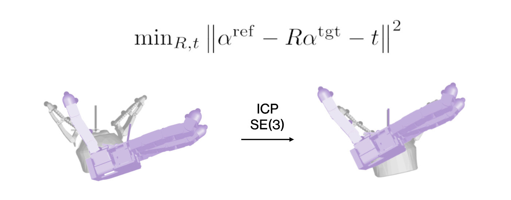
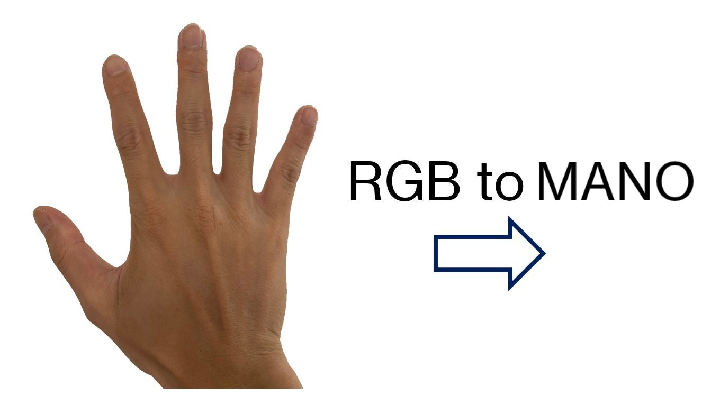
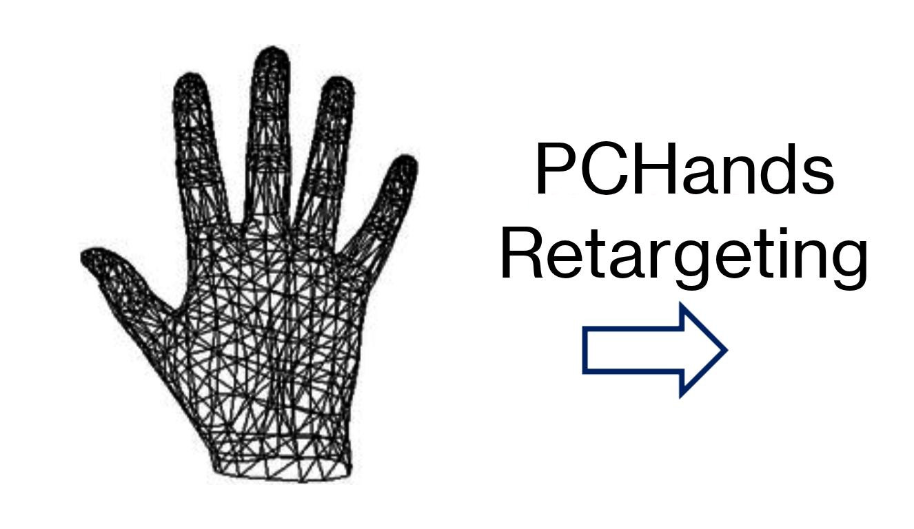
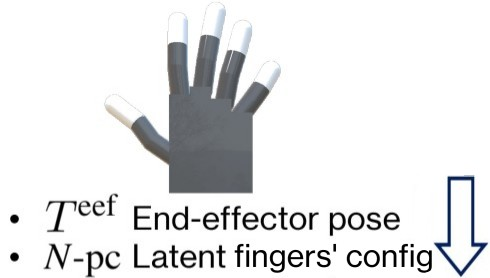
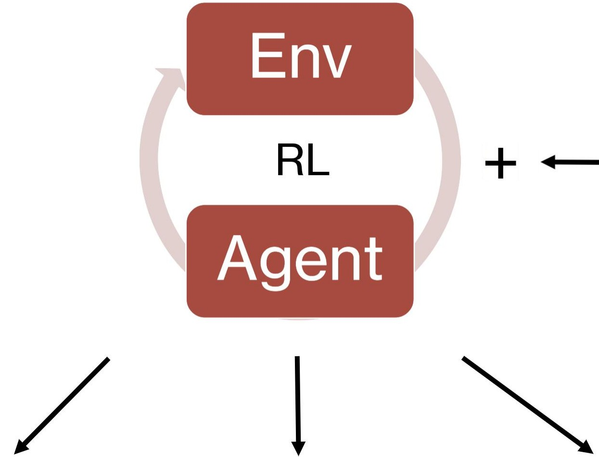

IEEE-RAS International Conference on Humanoid Robots
Humanoids 2025, Seoul
We consider the problem of learning a common representation for dexterous manipulation across manipulators of different morphologies. To this end, we propose PCHands, a novel approach for extracting hand postural synergies from a large set of manipulators. We define a simplified and unified description format based on anchor positions for manipulators ranging from 2-finger grippers to 5-finger anthropomorphic hands. This enables learning a variable-length latent representation of the manipulator configuration and the alignment of the end-effector frame of all manipulators. We show that it is possible to extract principal components from this latent representation that is universal across manipulators of different structures and degrees of freedom. To evaluate PCHands, we use this compact representation to encode observation and action spaces of control policies for dexterous manipulation tasks learned with Reinforcement Learning (RL). In terms of learning efficiency and consistency, the proposed representation outperforms a baseline that learns the same tasks in joint space. We additionally show that PCHands performs robustly in RL from demonstration, when demonstrations are provided from a different manipulator. We further support our results with real-world experiments that involve a 2-finger gripper and a 4-finger anthropomorphic hand.
For all manipulators, we use a single-step Iterative-Closest-Point (ICP) to align anchors of target (tgt) to reference (ref) manipulators'.

The most significant principal component corresponds to the dimension that is universal in representing simple openings.
We consider 5 dexterous manipulation tasks in our experiments:
The collection of demonstrations involves retargeting human hand poses to robotic embodiments during teleoperation. We then use the task demonstrations to train manipulation tasks with RL on multiple target manipulators.




Zero-shot Sim-to-Real Policy transfer on Robotiq-2f85 and Leap-hand manipulator for 3 objects in 1x speed.